AI를 검색창이 아니라 실험처럼 써요
출발점은 2026년 8월 3일 네이처에 실린 커리어 칼럼이에요. 제목을 우리말로 옮기면 "AI에서 더 많은 걸 얻고 싶다면, 모든 프롬프트를 실험처럼 다뤄라"예요. 아래 화면 왼쪽 노란 줄이 원제이고, 오른쪽 검은 칸이 영상이 붙인 번역이에요.
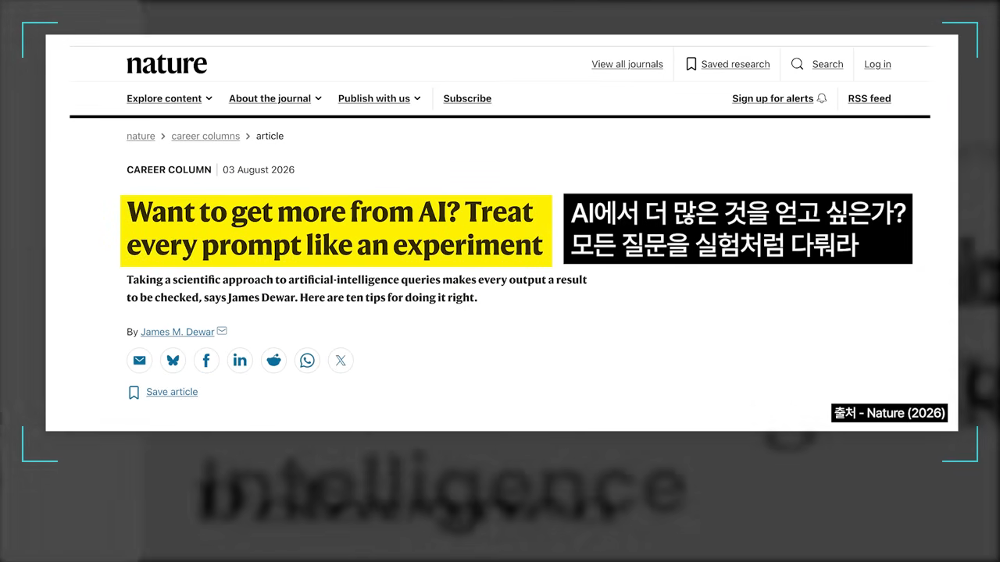
데워 교수는 밴더빌트대 의대에서 생화학을 가르쳐요. 그가 박사과정 신입생들에게 AI 수업을 만들어 가르치고 앞뒤를 쟀어요. 칼럼 본문에서 노란색으로 칠한 부분이 그 숫자예요. 81%가 이미 연구에 AI를 쓰고 있었지만, 프롬프트를 쓰는 기본기를 갖춘 사람은 5%뿐이었어요. 수업 뒤에는 48%가 됐어요.
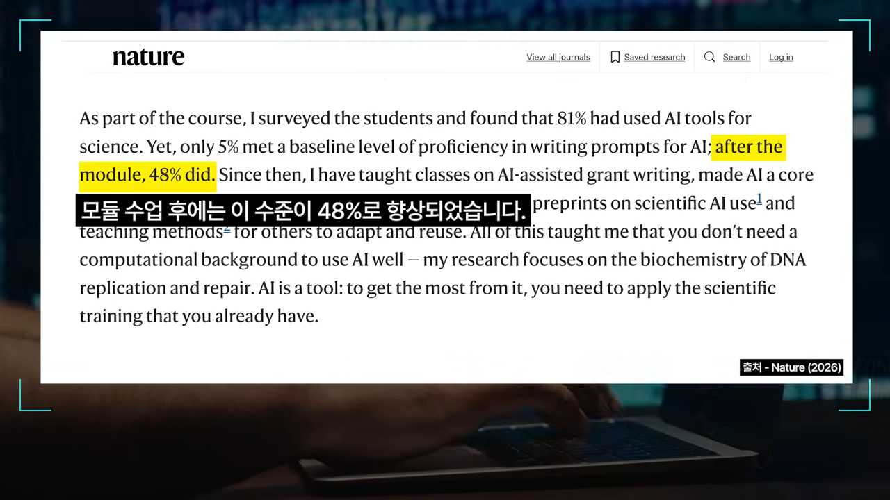
세 숫자를 같은 눈금에 놓으면 이렇게 돼요. 쓰는 사람과 제대로 쓰는 사람 사이의 거리가 크고, 수업 한 번으로 그 거리가 꽤 줄어요.
검색창처럼 쓰는 사람, 실험처럼 쓰는 사람
데워 교수가 꼽은 가장 쓸모 있는 방법은 "모든 프롬프트를 하나의 실험으로, 모든 답을 실험 결과로 다루라"는 거예요. 영상은 이걸 두 칸으로 대비해요. 왼쪽 빨간 칸이 우리가 AI를 쓰는 방식이에요. 묻고, 답을 받고, 그럴듯하면 써요. 평가 기준은 '이 답이 괜찮아 보이나' 하나뿐이에요. 오른쪽 청록 칸은 과학자의 방식이에요. 가설·조건·반복·검증이 있고, '다시 해도 같은 결과인가'만 의미가 있어요.
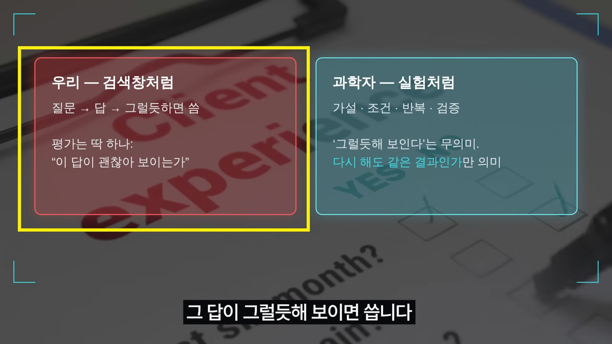
책 《AI 시대 어떻게 일할 것인가》의 저자 최동원 교수는 이 태도가 인류가 발전해 온 방식 자체라고 봐요. 화면 속 인용문은 데카르트의 의심, 헤겔의 충돌과 지양, 칼 포퍼의 반증을 차례로 꼽아요. 그중 핵심은 반증이에요. 내 생각이 틀렸다는 증거를 일부러 찾아보는 거예요.
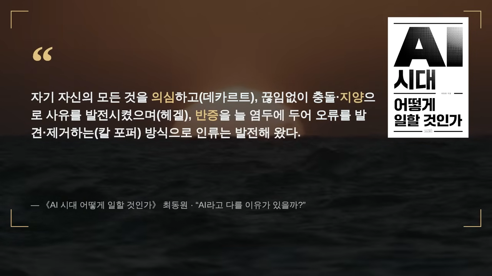
비법 1·2 — 자료를 먼저 주고, 뼈대를 세워요
비법 1. 묻기 전에 자료부터 줘요
슬라이드 아래 칸이 이 비법의 요지예요. AI는 자기가 닿을 수 있는 것에 대해서만 생각해요. 자료 없이 "우리 업계 요즘 어때?"라고 물으면 예전에 배운 기억을 더듬어 답하는데, 그 기억은 낡았거나 애초에 우리 업계 이야기가 아닐 수 있어요. 그래서 연구자라면 AI를 논문 검색 서비스에 연결하거나, 필요한 자료를 직접 넣어 줘야 해요.
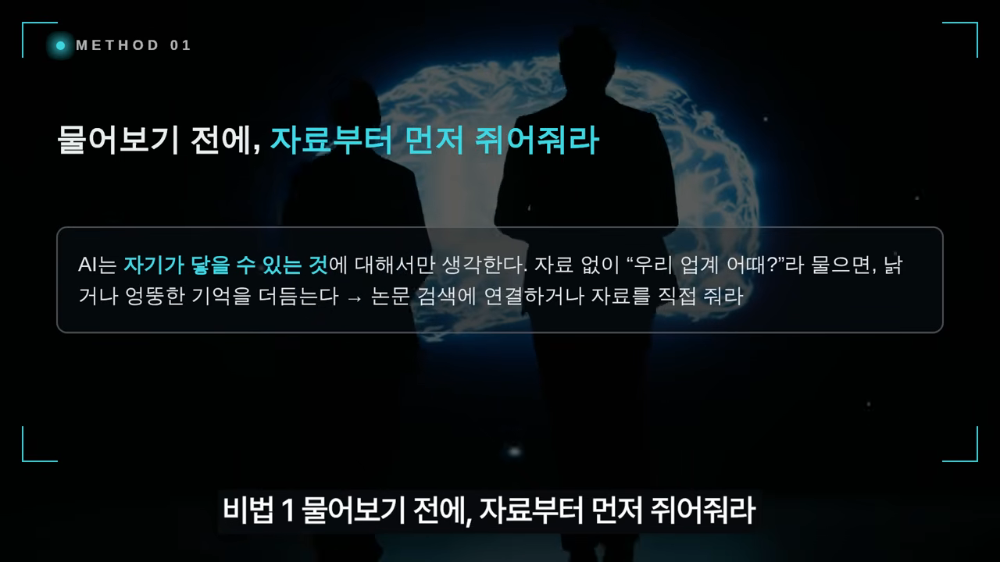
이 단계를 건너뛰면 무슨 일이 생기는지 책이 보여 줘요. 최동원 교수가 연구비 심사위원으로 제안서를 읽다가, 이름난 대학 연구진의 제안서가 이상하다는 걸 알아챘어요. 노란 표시 부분처럼, 잘 아는 주제인데도 인용된 논문들이 어딘가 낯설었어요. 확인해 보니 참고문헌 대부분이 세상에 없는 논문이었어요.
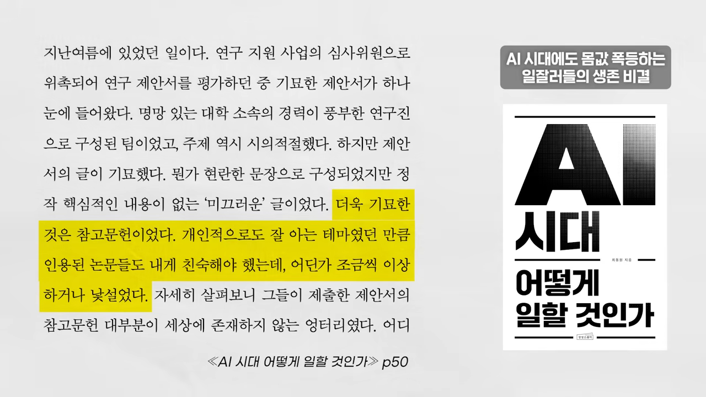
비법 2. 프롬프트의 뼈대를 세워요
AI는 줄글로 뭉친 긴 문장보다 항목이 나뉜 글을 더 정확히 이해해요. 슬라이드에는 데워 교수가 말한 형식이 두 줄로 정리돼 있어요. ①은 글머리표예요. 제목을 달고 항목을 나누고 목록으로 적어요. 대부분은 이것만으로 충분해요. 노란 테두리를 친 ②③은 복잡한 작업용이에요. 내용마다 이름표를 붙여 '여기부터 자료, 여기부터 지시'처럼 구역을 나눠요. 서류 봉투에 라벨을 붙이는 것과 같아요.
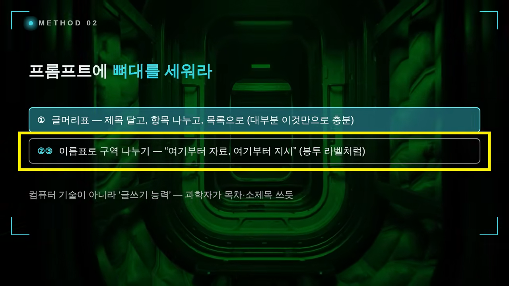
책이 학생들에게 가르치는 질문법도 같은 이야기예요. 왼쪽 빨간 칸은 답을 받는 질문, 오른쪽 청록 칸은 일을 시키는 질문이에요. 뒤쪽은 한 문장 안에 '정리 → 장단점 → 상황별 제안'이라는 순서를 심어 놨어요.
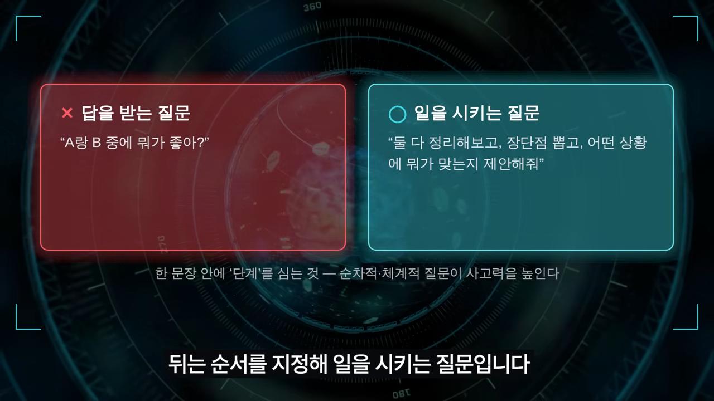
| 질문 방식 | 예시 | AI가 하는 일 |
|---|---|---|
| 답을 받는 질문 | A랑 B 중에 뭐가 좋아? | 하나를 골라 줘요 |
| 일을 시키는 질문 | 둘 다 정리하고, 장단점 뽑고, 어떤 상황에 뭐가 맞는지 제안해 줘 | 정해 준 순서대로 단계를 밟아요 |
비법 3·4 — 프롬프트도 쓰고 모아 둬요
비법 3. 프롬프트를 AI에게 대신 쓰게 해요
새 실험 장비를 쓸 때는 제조사 설명서부터 읽어요. 데워 교수는 AI의 경우 그 설명서가 AI 안에 이미 들어 있다고 말해요. 좋은 프롬프트를 짜는 법을 AI가 이미 안다는 뜻이에요. 슬라이드 가운데 청록 칸이 실제로 쓸 문장이에요.
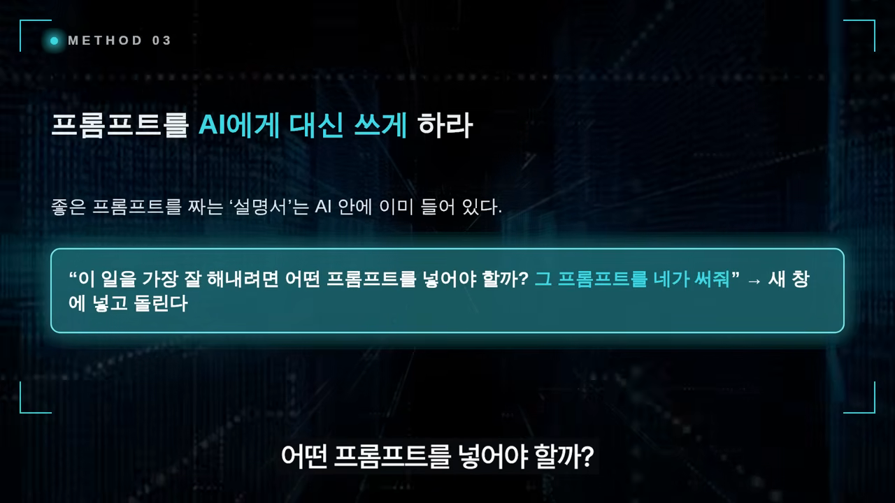
이렇게 AI에게 프롬프트를 쓰게 하는 방식을 흔히 메타 프롬프트라고 불러요. 아래 데워 교수의 프롬프트 모음에도 같은 이름의 항목이 있어요.
비법 4. 검증된 프롬프트를 다시 써요
연구자는 실험 방법을 매번 새로 발명하지 않고, 이미 발표된 방법을 가져다 써요. 어떤 프롬프트가 잘 통하는지는 AI마다 다르고 시간이 지나면 바뀌니까, 검증된 출발점이 있으면 헛수고를 줄여요. 슬라이드 아래 칸이 태도를 정리해요. 프롬프트는 쓰고 버리는 문장이 아니라 계속 다듬어 쌓는 나만의 업무 매뉴얼이에요.
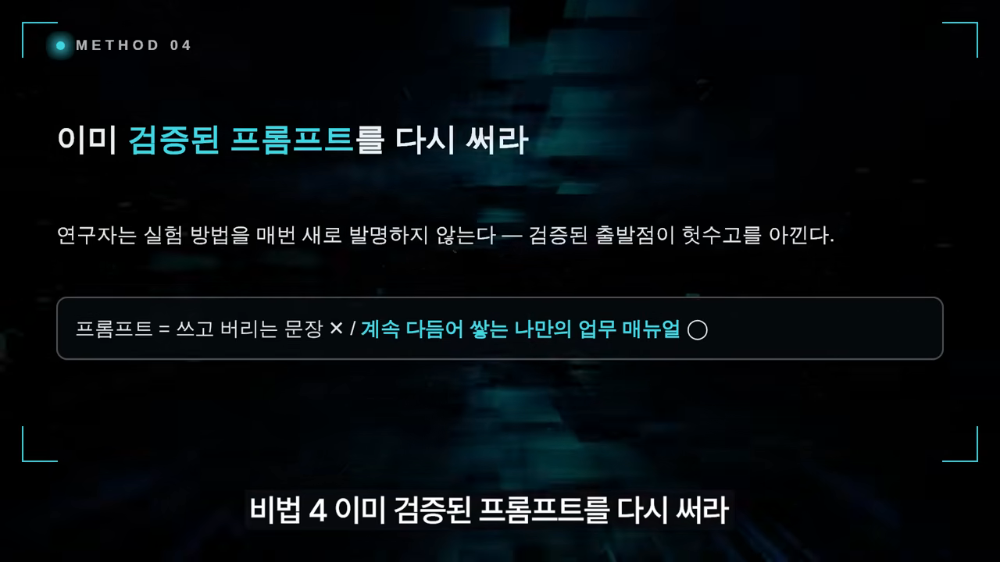
데워 교수는 자기가 쓰던 프롬프트 모음을 웹사이트에 무료로 공개했어요. 화면 오른쪽 위에 'by James M Dewar'가 보이고, Library 탭에 프롬프트 열두 개가 카드로 놓여 있어요. 카드마다 위에 작은 분류 이름이 붙어 있어요. 이 문서가 다루는 비법과 이어지는 카드가 여럿이에요. 'Citation fact-checker'는 출처가 진짜인지와 주장을 뒷받침하는지를 두 단계로 확인하고(비법 8), 'Summarize & start fresh'는 긴 대화를 새 창용 프롬프트 하나로 줄여요(비법 5). 'Tell me I'm wrong (red-team)'은 내 추론에 맞서는 가장 강한 반론을 찾고, 'Meta-prompt'는 쉬운 설명을 프롬프트로 바꿔 줘요(비법 3).
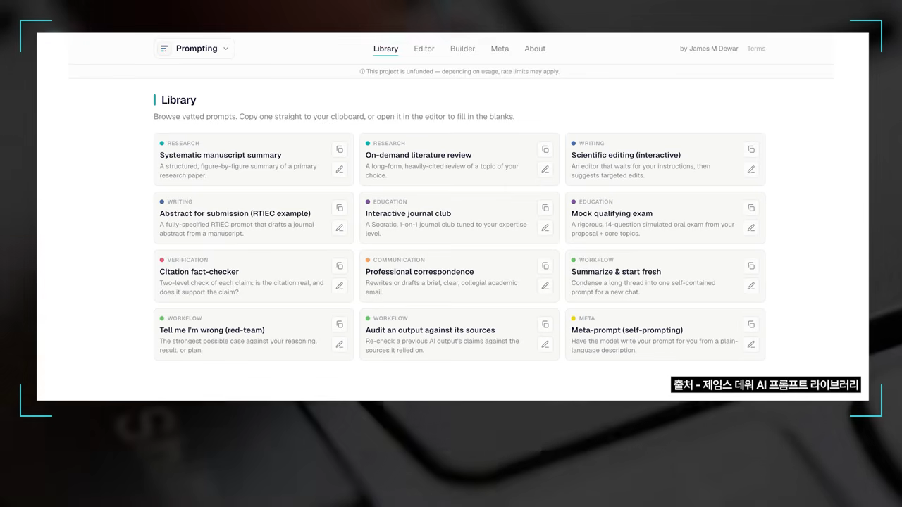
질문의 기록이 실력이에요
책도 같은 태도를 말해요. 4장 '개인 편: 겸손의 힘'의 두 번째 꼭지 제목이 노란 줄로 표시된 '질문의 기록이 당신의 실력!'이에요.
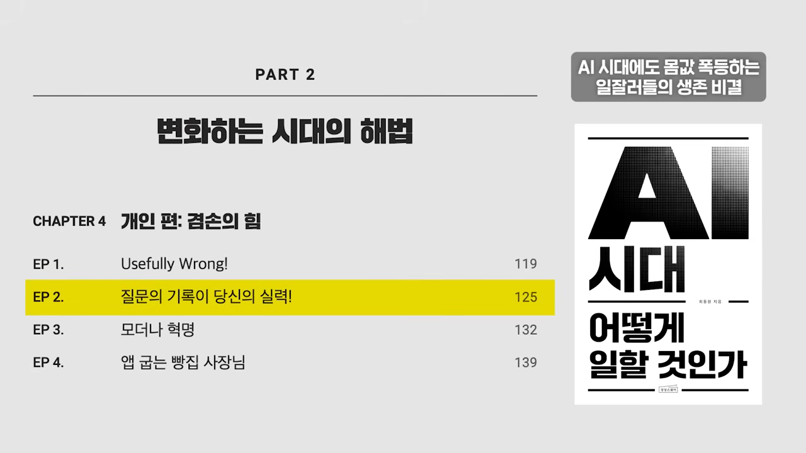
저자는 이 변화가 채용에서도 보인다고 해요. 노란 표시 부분이 그 내용이에요. 프롬프트 엔지니어를 뽑을 때 결과물을 얼마나 빨리 냈는지보다, 과정을 얼마나 체계적으로 짰는지, AI 결과의 한계를 어떻게 검증했는지, 사람이 어떻게 판단해 방향을 고쳤는지를 본다는 거예요.
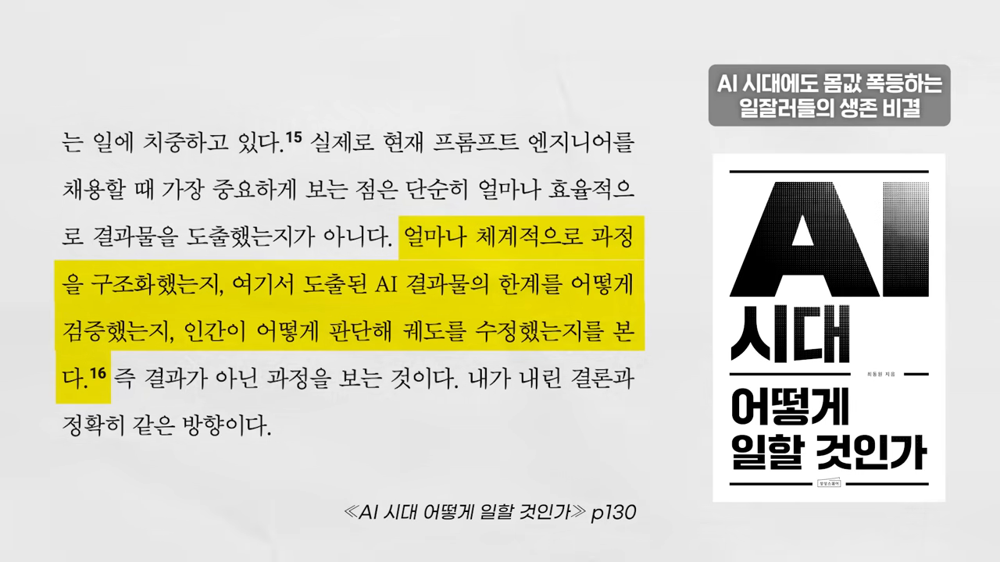
비법 5·6 — 대화는 짧게, 망가지면 되돌아가요
비법 5. 대화를 짧게 끊어요
이 비법은 우리 습관과 반대예요. 우리는 한 창을 오래 붙들수록 AI가 나를 더 잘 이해할 거라고 믿어요. 네이처 칼럼의 'Keep conversations short' 단락은 다르게 말해요. 노란 표시 부분을 보면, 채팅 형식은 사람에게 맞아서 있을 뿐이고 대화가 길어질수록 모델의 신뢰도가 떨어지며, 이미 나온 말은 잊을 수도 없어요.
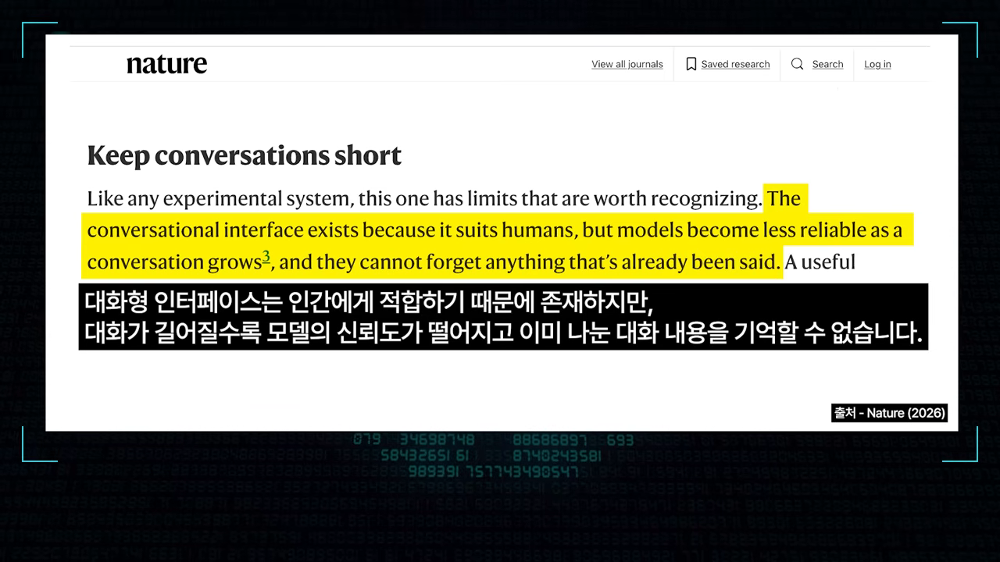
근거로 든 연구는 라반 등이 2025년에 낸 논문 'LLMs Get Lost in Multi-Turn Conversation'이에요. 화면 가운데 큰 숫자가 결과예요. 20만 건이 넘는 대화를 시뮬레이션했더니, 테스트한 최상위 AI 모두가 여섯 가지 과제에서 평균 39% 낮은 성능을 보였어요. 한 번에 명확히 물을 때보다 여러 번 나눠 주고받을 때가 훨씬 나빴다는 뜻이에요. 이렇게 여러 번 주고받는 대화를 멀티턴 대화라고 불러요.
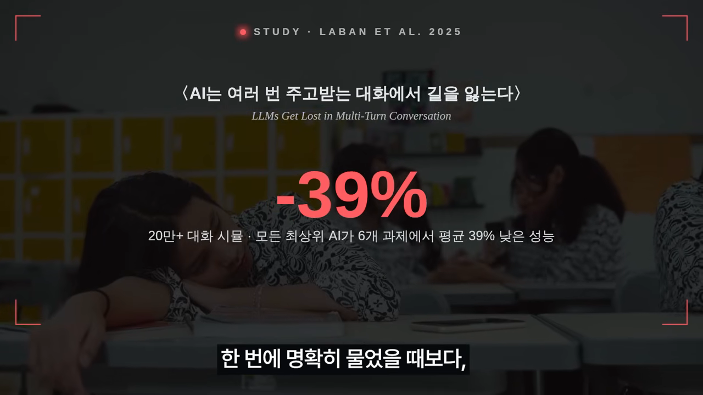
해법은 세 칸짜리 흐름이에요. 한 창에서 실컷 논의하고, 결론이 나면 "새 대화에 그대로 넣을 수 있게 하나로 요약해 줘"라고 시키고, 그 요약을 들고 새 창으로 옮겨 가요.
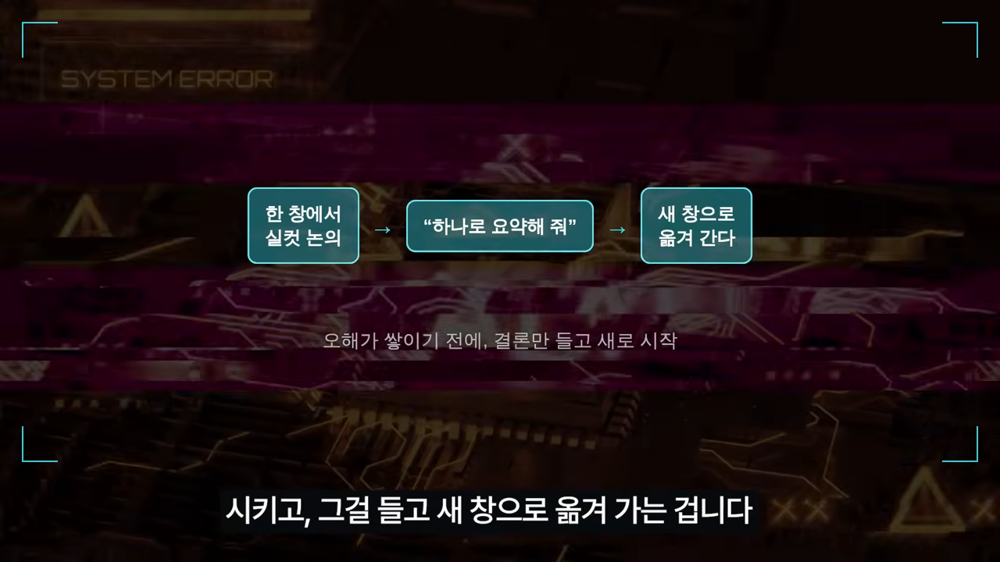
비법 6. 망가진 대화는 고치지 말고 되돌아가요
대화는 중간에 이상해지기도 해요. AI가 지시를 무시하는 것 같거나 같은 실수를 되풀이해요. 슬라이드 아래 칸이 이유와 처방을 한 줄로 묶어요. AI는 앞과 끝은 잘 쓰고 가운데 정보는 흘려요. 그러니 오류 전 지점으로 가서 그 메시지를 고쳐 다시 출발해요.
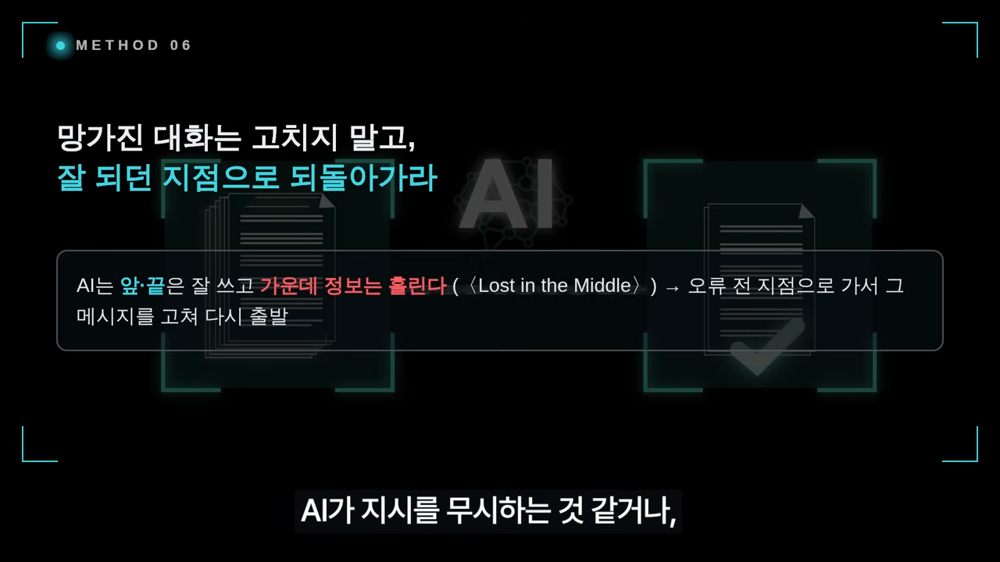
칼럼 원문 'Return to the last working version' 단락도 같은 내용이에요. 위쪽 노란 표시는 원인이에요. 모델이 대화의 시작과 끝을 중간보다 우선시해서 생기는 일이니, 고장 난 장비를 다루듯 접근하래요. 아래쪽 노란 표시는 처방이에요. 오류가 생기기 전 메시지에서 갈라져 나오거나, 중요한 것만 요약해 새로 시작해요.
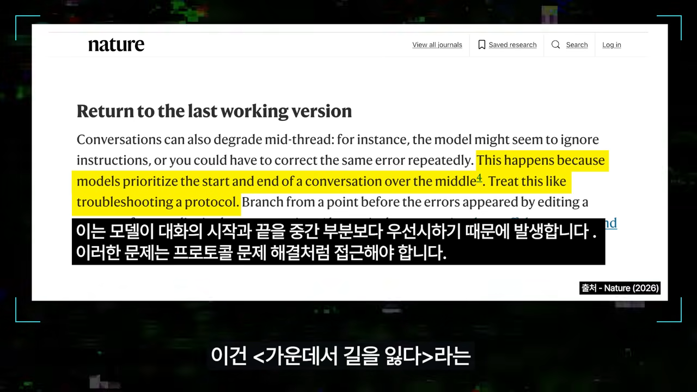
비법 7·8 — 여러 번 돌리고, 따로 검증해요
비법 7. 같은 걸 여러 번 돌려서 흔들리는지 봐요
AI는 매번 조금씩 다르게 대답해요. 다음 단어를 확률적으로 골라내는 방식이라서예요. 어제와 오늘 답이 다른 건 고장이 아니라 원래 그래요. 그래서 데워 교수는 같은 프롬프트를 서로 다른 창에서 여러 번 돌려 보라고 해요. 실험을 여러 번 반복해 확인하는 것과 같다고요. 슬라이드는 그 효과를 두 가지로 적어요. 1번은 무엇이 단단한 결론이고 무엇이 우연히 튀어나온 소리인지 드러난다는 것이고, 2번은 나올 수 있는 답의 범위를 더 많이 봐서 빠진 게 줄어든다는 거예요.
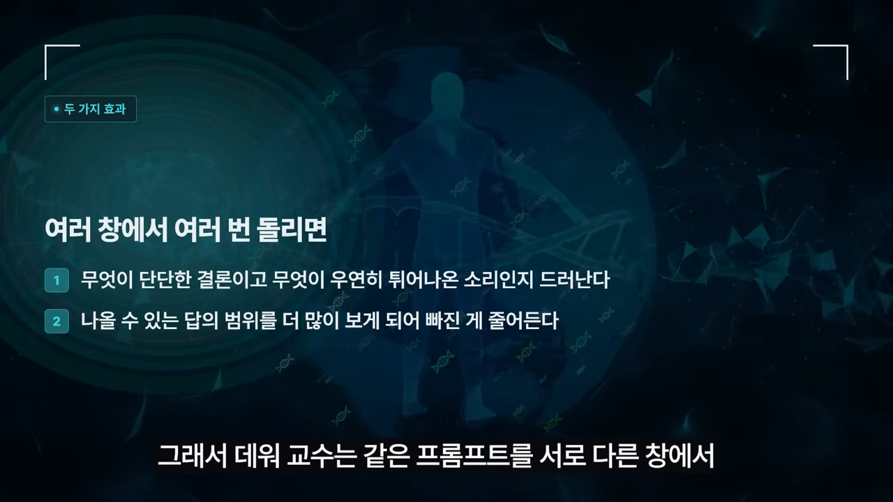
영상의 예시는 신사업 진출이에요. 같은 질문을 세 창에서 했더니 창 1은 '적극 추천', 창 2는 '조건부', 창 3은 '하지 마세요'가 나왔어요. 첫 답이 아무리 그럴듯해도, 이 판단은 믿을 게 못 된다는 아주 중요한 정보를 얻은 거예요.
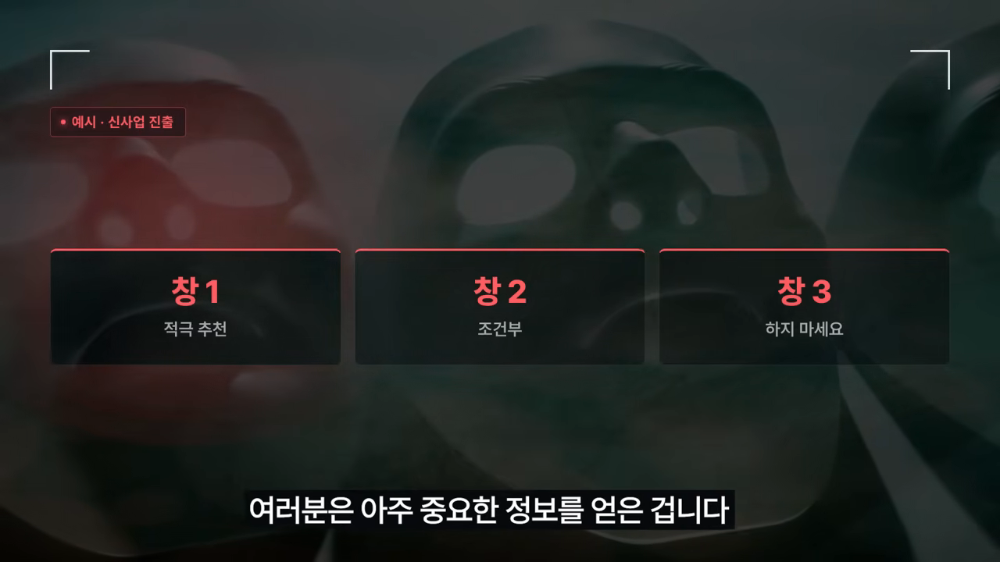
책은 이 태도를 두 함정으로 정리해요. 왼쪽 오만은 'AI는 다 엉터리'라고 믿는 것, 오른쪽 나태는 AI에게 결정을 맡겨 버리는 거예요. 아래 작은 글씨가 핵심이에요. 둘 다 실험을 안 하는 거예요. 저자는 대신 "내 경험상 이 부분은 이상한데, 맥락과 조건을 바꿔서 다시 검증할까?"라는 겸손을 권해요. 이 문장이 네이처가 말한 반복 실험과 같아요.
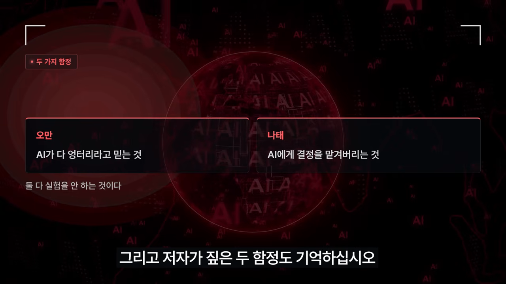
비법 8. 답이 사실인지 확인해요
데워 교수는 AI의 답을 두 눈으로 동시에 보라고 해요. 노란 테두리 안 왼쪽 청록 칸은 아주 수준 높은 지적 도움으로 보는 눈, 오른쪽 빨간 칸은 아직 확인 안 된 주장으로 보는 눈이에요. 실제로는 쉽지 않아요. 우리는 보통 'AI 대단한데, 그대로 쓰자'나 'AI 못 믿겠다, 안 써' 중 편한 쪽으로 가요.
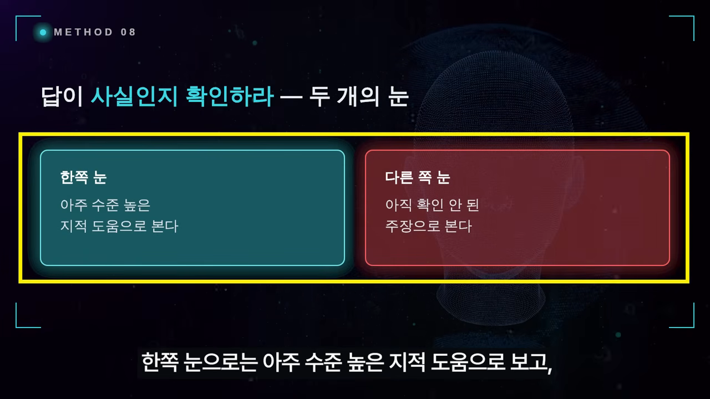
책은 같은 생각을 말한 회사로 마이크로소프트를 들어요. 2023년 사무용 AI 도구를 발표하면서 "우리가 제공하는 기술은 때로는 '유용하게 틀릴'지 모른다"고 했다는 거예요. 자기 제품이 틀릴 수 있다고 대놓고 인정한 셈이에요. 아래 작은 글씨처럼, 사용자가 직접 실수를 고치면 그게 한계를 넘는 출발점이 된다고 덧붙였어요.
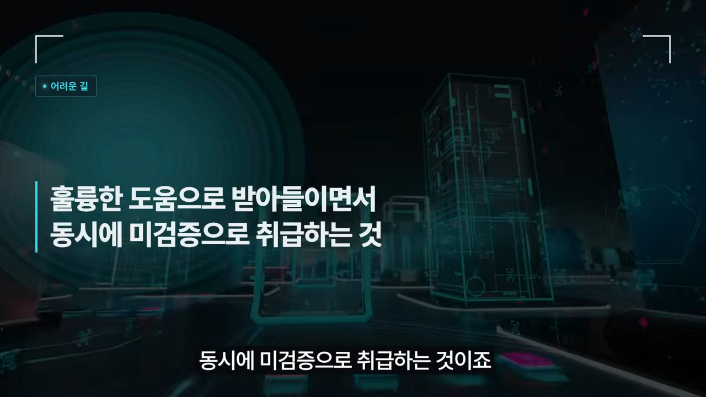
확인은 어떻게 할까요? AI가 근거를 대며 답하면 두 가지를 따로 물어요. 하나는 그 출처가 실제로 있는지, 다른 하나는 그 출처가 이 주장을 정말 뒷받침하는지예요. AI는 없는 논문을 만들기도 하고, 있는 논문을 엉뚱하게 인용하기도 해서 둘을 나눠 봐야 해요. 그리고 검사는 만든 창이 아닌 다른 창에서 해요. 영상이 말로 설명한 이 흐름을 그림으로 옮겼어요.
왜 같은 창에서 물으면 안 될까요? 책의 인용이 그 이유예요. AI는 틀릴 뿐 아니라 그럴듯한 거짓말도 잘하고, 사람이 닦달하면 곧장 없는 말을 지어내고, 부적절한 근거를 대며 비위를 맞추는 아첨 현상까지 보인다는 거예요.
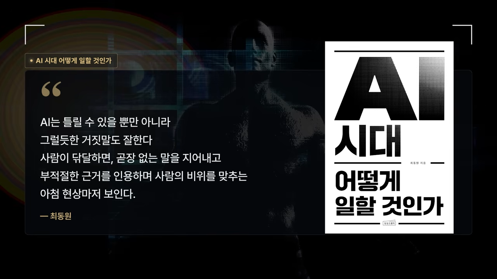
결국 실험을 설계하는 능력이에요
비법 8의 마지막 처방이 이 문서 전체의 요약이기도 해요. 슬라이드 위 빨간 줄은 영상이 '세상에서 가장 쓸모없는 지시'라고 부른 문장이고, 아래 청록 줄이 대신 쓸 문장이에요. 일부러 반대로 시켜야 검증이 돼요. 반증을 채팅창에서 하는 셈이에요.
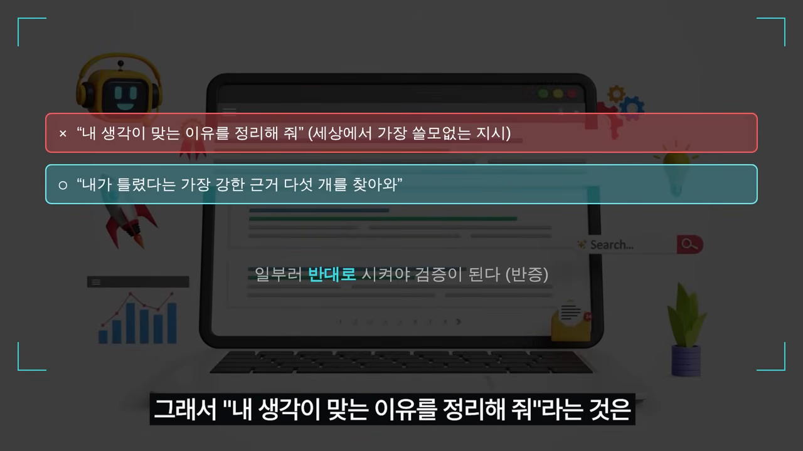
여덟 가지를 꿰는 다섯 질문
영상은 여덟 가지의 핵심이 프롬프트를 멋있게 쓰는 기술이 아니라고 정리해요. 슬라이드의 다섯 줄이 그 대신 던질 질문이에요. 무엇을 알아내려 하나, 무엇을 성공으로 볼 건가, 어떤 자료를 줄 건가, 결과가 다시 나오나, 어떤 증거가 나오면 결론을 뒤집을 건가. 이건 실험을 설계하는 능력, 곧 과학적 사고예요.
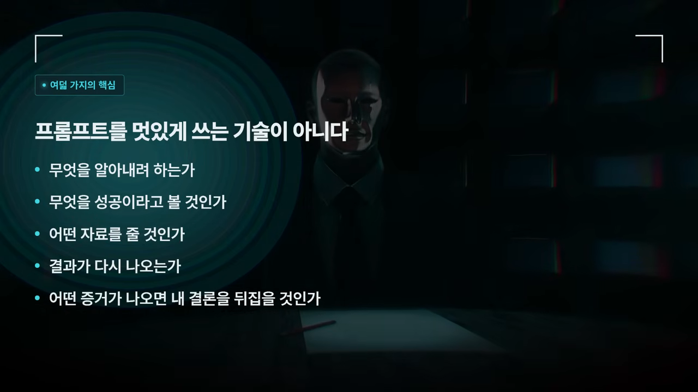
여덟 비법마다 영상이 붙인 실험실 비유를 한데 모으면 이렇게 돼요.
| 비법 | 할 일 | 영상의 실험 비유 |
|---|---|---|
| 1 | 묻기 전에 자료부터 줘요 | 시약 없이 실험을 시작하지 않아요 |
| 2 | 프롬프트에 뼈대를 세워요 | 과학자가 목차·소제목으로 문서를 읽어요 |
| 3 | 프롬프트를 AI가 쓰게 해요 | 새 장비는 제조사 설명서부터 읽어요 |
| 4 | 검증된 프롬프트를 다시 써요 | 발표된 실험법을 가져다 써요 |
| 5 | 대화를 짧게 끊어요 | 실험 시스템에는 한계가 있어요 |
| 6 | 잘 되던 지점으로 되돌아가요 | 고장 난 장비는 오류 전 상태로 돌려요 |
| 7 | 여러 번 돌려 흔들리는지 봐요 | 실험을 반복해 확인해요 |
| 8 | 출처를 따로 검증해요 | 결과를 검증해요 (반증) |
문제를 정의하는 건 사람 몫이에요
책은 킹스칼리지런던의 오우즈 아자르 교수 말을 인용해요. 그는 지금의 프롬프트 작성이 피상적이라 AI가 발전하면 쓸모없어질 수도 있다고 보면서도, 화면 속 인용처럼 프롬프트 엔지니어링의 핵심은 '문제를 제대로 정의하는 것'이고 이건 AI가 발전해도 사람이 맡을 수밖에 없다고 강조해요.
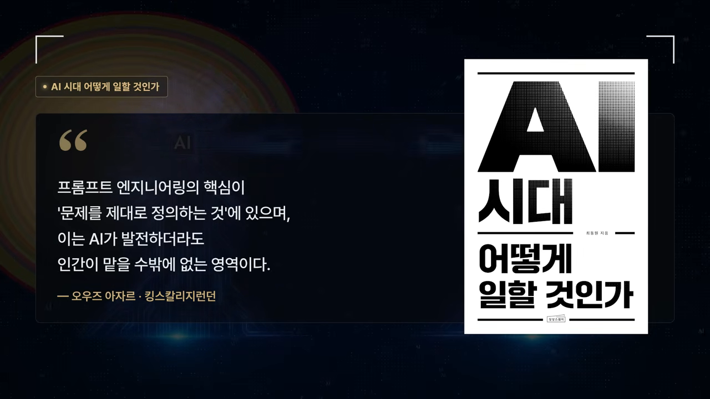
AI는 평등한 도구가 아니에요
그럼 이 방법을 익히면 격차가 줄까요? 최동원 교수가 2025년 한 해 동안 학생들에게 AI 과제를 내 보니 결과는 반대였어요. 노란 표시 부분처럼, 사전 지식과 지적 수준을 갖춘 학생들은 학부생 수준 이상의 활동을 척척 해냈어요. 그렇지 못한 학생들은 기초 내용을 소화하기 바빴고, 그마저 AI 환각에 빠져 허우적거렸어요. 저자는 이걸 빈익빈 부익부라고 불러요.
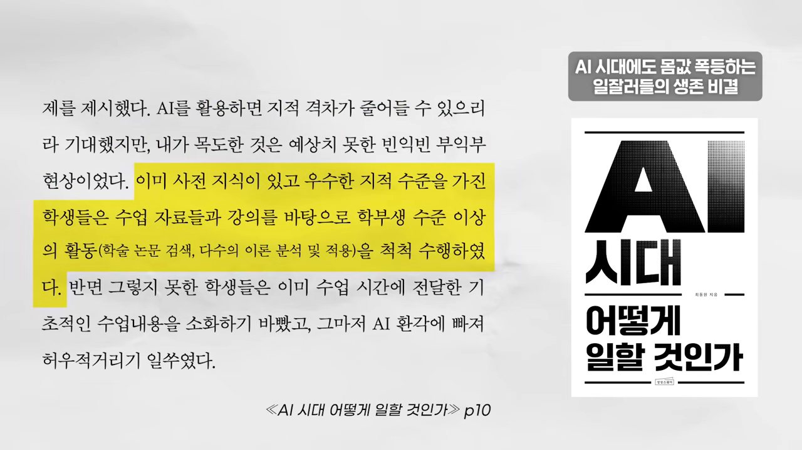
영상은 이걸 두 칸으로 정리해요. 검증할 능력이 있으면 AI는 증폭기가 되고, 없으면 함정이 돼요. 1장의 숫자, 81%가 쓰지만 5%만 제대로 쓴다는 결과가 바로 이 격차의 다른 이름이에요.
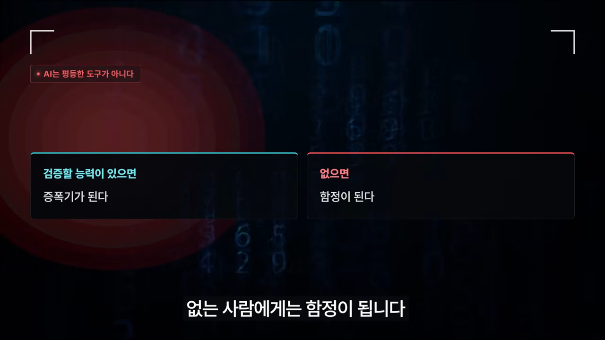
정리 — 정답 말고 가설을 물어요
책은 답을 기술이 아니라 태도에서 찾아요. 자기가 무엇을 모르는지 알고, 자기처럼 AI도 틀릴 수 있다는 걸 아는 겸손이 있어야 검증이 습관이 된다는 거예요. 책은 AI를 검증하는 게 선택이 아니라 새로운 의무라고 못 박아요. AI에게 맡긴 작업의 최종 검수도, 거기서 나온 실수도 결국 내 몫이에요. 영상은 여덟 가지를 마지막 슬라이드의 한 문장으로 압축해요.
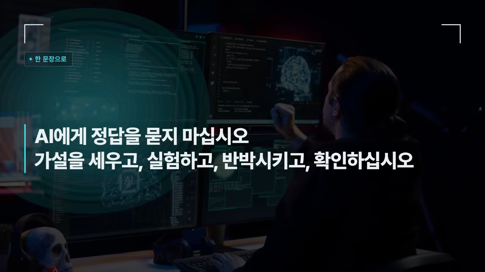
AI가 틀렸다고 변명할 수 있는 사람은 없습니다. 최종 검수는 내 몫이고 그래서 그 실수는 내 실수입니다.
— 영상 18:07